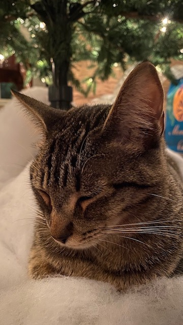

Junior RISD: Industrial Design
One Lazy Cat: Sneezy
I have now perfected the art of afternoon naps in my new quarantine life. Before this I have never taken a nap as they always make me feel worse. Now I know the perfect amount of time I can sleep to feel the perfect amount of refreshness: 2hrs and 15min.
Is literally just a desk by my bed